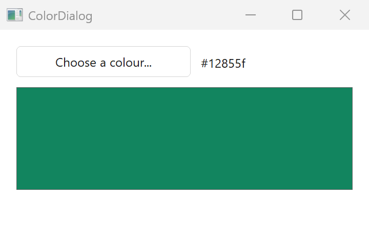

หน้าต่างเลือกสี (ColorDialog)
ในกล่องเครื่องมือ: หน้าต่างเลือกสี · เทียบกับ WinForms: ColorDialog
หน้าต่างเลือกสีของ Windows - ได้สีเป็นรหัส #rrggbb ใช้กับ CSS และการวาดได้ทันที
show_dialog(สีเริ่มต้น)ได้Option<String>-Noneคือกด Cancel

อยู่ในกล่องเครื่องมือกลุ่ม กล่องโต้ตอบ (Dialogs) - ลากมาวางแล้วมันจะไปอยู่ในแถบด้านล่างของตัวออกแบบ (ไม่ได้อยู่บนหน้าต่าง) · ในโค้ดเรียกมันว่า ui.ชื่อId ซึ่งเป็นชนิด phai_ui::ctl::ColorDialog
ตัวอย่าง
1. เลือกสีแล้วระบายแผง
เก็บสีไว้ใน struct แล้วให้แผงวาดใหม่ (event Paint ของแผงระบายด้วยสีนั้น):
fn pick_clicked(&mut self, ui: &ColordialogDemoUi) {
// Starts on the colour we have; gives "#rrggbb", or None for Cancel.
if let Some(c) = ui.colours.show_dialog(&self.colour) {
self.colour = c;
ui.code.set_text(&self.colour);
ui.swatch.invalidate();
}
}หน้าต่างตัวอย่างทั้งหมด: colordialog_demo.phaiform กับ colordialog_demo.rs ในโปรเจกต์ docs/help-src/examples/controls - รันด้วย cargo run -- colordialog
Method ของ ColorDialog
| Method | ทำอะไร |
|---|---|
show_dialog(&self, start: &str) -> Option<String> | เปิดหน้าต่างโดยเริ่มที่สี start ได้ "#rrggbb" - None เมื่อกด Cancel |
Properties
ตั้งได้ในหน้าต่าง Properties เมื่อเลือกมันบนฟอร์ม - ตารางนี้สร้างจาก Phai Studio เอง จึงตรงกับที่เห็นในโปรแกรมเสมอ
| Property | ค่าเริ่มต้น | ทำอะไร |
|---|---|---|
| ออกแบบ | ||
| รหัส | colordialog | ชื่อ control ในโค้ด และ #id ใน CSS |
ลองทำเอง
- ให้แผงวาดสองสี ครึ่งซ้ายสีที่เลือกครึ่งขวาสีเดิม
- จำห้าสีล่าสุดที่เลือก แล้วแสดงเป็นแถบสีเล็ก ๆ